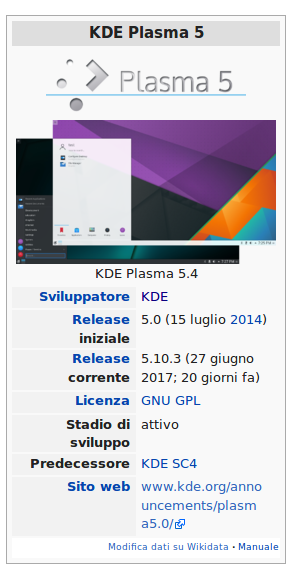
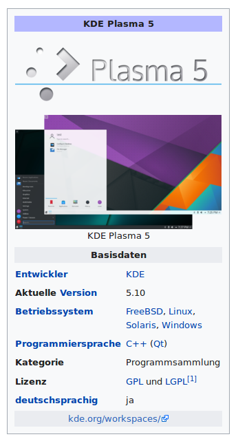
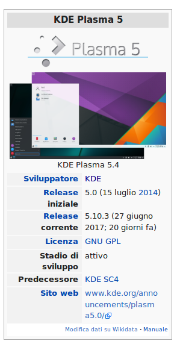
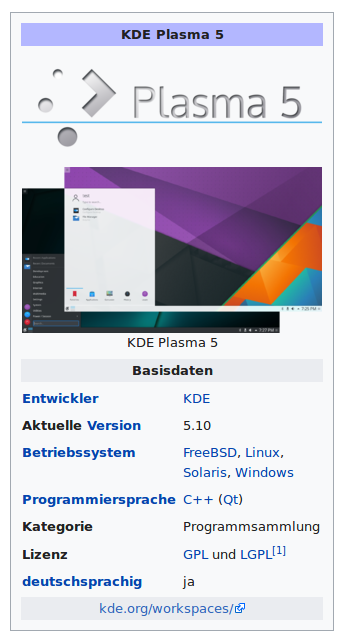

This is an abridged version of the talk Wikidata: Exploring more visibility and coverage of KDE Applications given by me at Akademy 2017 in Almeria on 22nd July, 2017.


Wikidata is a sister project of Wikipedia aimed to be a data store of facts with references. Unlike Wikipedia, which is aimed primarily for human consumption, Wikidata can be used both by machines and humans, given its structured nature.
Contributions to KDE can be in many forms including development, testing, marketing etc. However,

 



Q-number
https://www.wikidata.org/wiki/Q1765672
P-number
https://www.wikidata.org/wiki/Property:P31
Q-number and
P-number
- instance of P31
- image P18
- logo image P154
- GUI toolkit or framework P1414
- software version P348
- ...
- WikiProject Informatics/Software
- WikiProject Informatics/Operating System
- WikiProject Informatics/Programming Language
- ...
- Quickstatements(2)
- HarvestTemplates
- PetScan
- Quickstatements
- CREATE
- LAST Len "Software Name"
- LAST Lfr "Nom du logiciel"
- LAST Den "description"
- LAST Dfr "la description"
- LAST P31 Q?
- Quickstatements
- HarvestTemplates
- Import data from Wikipedia Templates (e.g., Infoboxes)
- Template Name, Property Name, P-Number
- Quickstatements
- HarvestTemplates
- PetScan
- Find Wikipedia articles matching categories
- Edit Wikidata items
- KDE Evolution
- Automation and Collaboration
- Linguistic Diversity
References
- Wikidata in Wikipedia, Mike Peel, Wikimania 2016
- Wikimedia Commons
- MediaWiki API (https://www.mediawiki.org/wiki/API:Main_page)
- Article Placeholder (https://www.mediawiki.org/wiki/Extension:ArticlePlaceholder)
- Quickstatements (https://tools.wmflabs.org/wikidata-todo/quick_statements.php)
- HarvestTemplates (https://tools.wmflabs.org/pltools/harvesttemplates/)
- PetScan (http://petscan.wmflabs.org/)
- Pywikibot (https://www.mediawiki.org/wiki/Manual:Pywikibot)
- Acknowledgements
- Wikimedia Hackathon 2017
- Wikidata community members